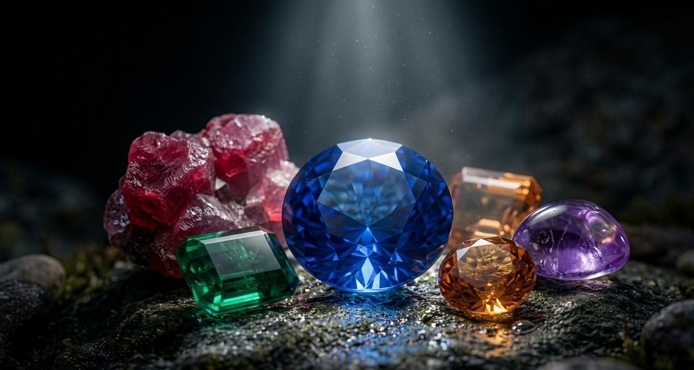
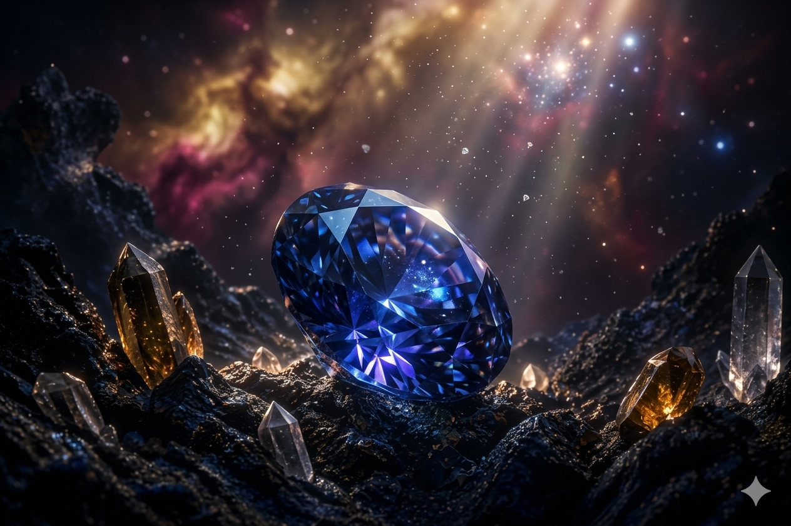
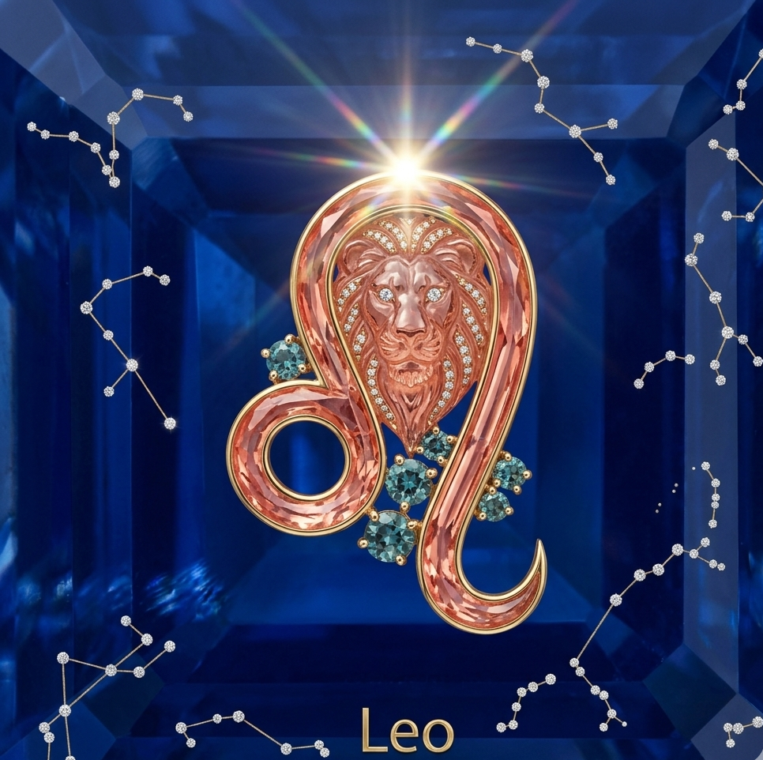

Fragments of Time. Sculpted by the Universe.

Born beneath pressure and silence, each gem carries the memory of a world long before ours.
Learn More →Light enters, bends, and whispers through layers of time—revealing what cannot be replicated.

Human hands meet ancient matter, not to change it—but to reveal it.

Keeper of Ancient Treasures
In the mist-covered hills of Bogawanthalawa, where tea estates stretch like quiet witnesses to history, a boy was born on June 28, 1992. His name was Ilonthan but names, like identities, evolve - those who knew him closely would come to call him Leo.
His story does not begin with privilege. It begins with distance - distance from opportunities, recognition, from the centers where futures are usually decided. At the estate school where he studied until 9th grade, the world felt both small and infinite. Small in resources, infinite in questions.
He moved to Kandy - his first crossing. At Ashoka Private School, he encountered a broader world, one that demanded adaptation. Language, culture, expectation - each became both obstacle and instrument. Then came another journey eastward, to Batticaloa, where he continued his Advanced Level studies at St. Michael's College, National School. Each move reshaped him, not just academically, but internally - teaching him how to belong without ever fully settling.
But it was in Chennai, India, that his mind found its true terrain.
At Loyola College, under the vast intellectual shadow of the University of Madras, Ilonthan immersed himself in Sociology and Philosophy - not merely as subjects, but as tools to dissect reality itself. Society was no longer something he lived in; it became something he could read, question, and challenge. Philosophy was no longer abstract; it became personal.
Yet, life demanded more than thought - it demanded action...!
He stepped into roles that required both structure and empathy. At Loyola Campus in Batticaloa, he worked as an Assistant Director and Facilitator, shaping minds while quietly refining his own. In 2024, he stood at the intersection of language and democracy, working with the European Union and the Election Commission of Sri Lanka as a translator and Interpreter during the Presidential Election. In those moments, words were no longer just expressions - they were instruments of power, clarity, and accountability.
By May 2024, he entered the corporate world as an Administrative Executive at Wijaya Gems Private Limited - a space far removed from philosophy classrooms, yet deeply connected to the same human systems he had long studied. Earlier still, in Chennai, he had lived another life altogether - working in a restaurant, understanding people not through theory, but through service, rhythm, and survival.
He speaks Tamil as his mother tongue, moves fluently in English, and navigates Sinhala with ease - three languages, three worlds, one voice.
But to define Ilonthan by his roles alone would be a mistake...
He is a storyteller. A performer. A quiet observer of human contradictions. He finds meaning in music, expression in drama, and clarity in solitude. Cricket grounds, kitchen spaces, garden soil - these are not hobbies, but extensions of a mind that refuses to be one-dimensional.
His intellectual compass points toward philosophy, cosmology, and the layered truths found in politics and reality-based cinema. He reads Dan Brown and Jeffrey Archer not just for story, but for structure - for the mechanics of narrative itself.
He prefers black and red - not merely as colors, but as moods. As statements.
There is, in him, a constant tension: between thought and action, solitude and society, reality and interpretation. It is this tension that defines him.
Ilonthan is not a finished story. He is a process - ongoing, evolving, questioning.
And like all such lives, his true direction is not something to be predicted...
...but something to be witnessed.
— Leokanth
Founder @Aetherion Gems